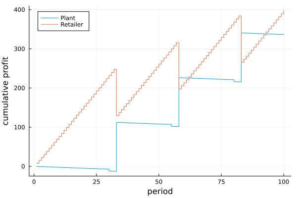

Examples
Example 1
This example has plant with unlimited raw material supply that converts :B to :A with a 1:1 stoichiometry. The plant sells both materials to a downstream retailer that has market demand for both materials. This system is modeled using 2 nodes:
- Plant: Node 1 with a self-loop for the production of
:Afrom:B - Retailer: Node 2 buys
:Band:Afrom Node 1
Demand and lead times are deterministic. A continuous review (s,S) policy is used. 100 periods are simulated.
See code with system and policy parameters here.
 
Example 2
This example has a distributor with unlimited inventory (Node 1) that sells :A to a retailer with market demand (Node 2).
Demand and lead time is stochastic. A periodic review (r,Q) policy is used. 100 periods are simulated.
See code with system and policy parameters here.
Example 3
This example has plant that converts :C to :B to :A with a 1:1 stoichiometry for each reaction. The plant acquires raw materials from a supplier upstream with unlimited supply of :C and sells :A to a retailer downstream. There is direct market demand of :A at both the retailer and the plant. Thus, the plant has both internal and external demand. This system is modeled using 3 nodes:
- Supplier: Node 1 (unlimited supply
:C) - Plant: Node 2 with a self-loop for production of
:Bfrom:Cand:Afrom:B - Retailer: Node 3 buys
:Afrom Node 2 and sells:Ato the market.
Demand and lead times are stochastic. A continuous review (s,S) policy is used. 100 periods are simulated.
See code with system and policy parameters here.